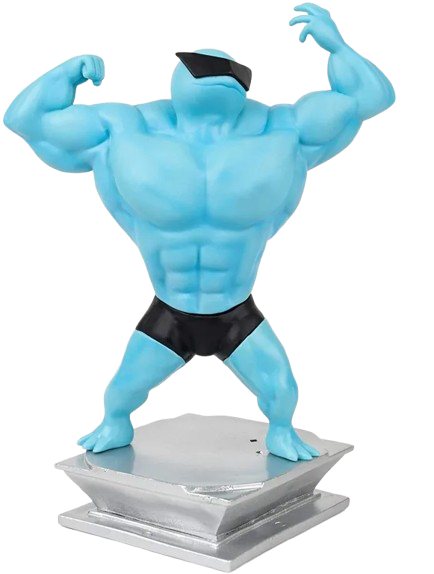

Squirtle é um pequeno Pokémon do tipo Água, com uma aparência semelhante a uma tartaruga. Ele é azul-claro, com uma carapaça marrom-avermelhada e uma cauda em espiral. A sua carapaça é resistente e serve tanto para proteção como para minimizar a resistência na água, permitindo que ele nade em alta velocidade.
 warturtle